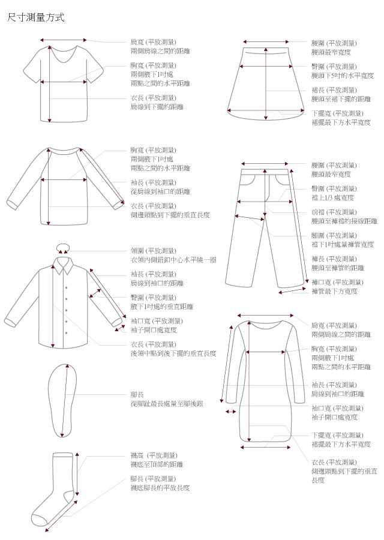

Size Guide
尺寸表
| 尺寸 | S | M | L |
|---|---|---|---|
| 腰圍 | 32 | 34.5 | 37 |
| 臀圍 | 48 | 50.5 | 53 |
| 前檔 | 30 | 31 | 32 |
| 後檔 | 40 | 41 | 42 |
| 大腿圍 | 32 | 33.25 | 34.5 |
| 褲口寬 | 30 | 31 | 32 |
| 褲長 | 46 | 47.5 | 49 |
| 重量(g) | 263 | 263 | 263 |
單位: CM
※ 本尺寸表會因布料彈性、水洗處理、測量起訖點、人為拉扯等因素，與實際商品尺寸略有誤差，誤差尺寸±2cm，在國際驗貨標準範圍都是屬於可接受範圍，並不屬於瑕疵。

試穿報告
| 試穿人員 | A | B | C | D |
|---|---|---|---|---|
| 身高 | 156 | 160 | 160 | 163 |
| 體重(kg) | 44 | 62 | 51 | 58 |
| 肩寬 | 34 | 36.5 | 36 | 35.5 |
| 上胸圍 | 80 | 88 | 88 | 87 |
| 下胸圍 | 67 | 74 | 74 | 74 |
| 腰圍 | 62 | 68 | 68 | 71 |
| 下腰圍 | 72 | 83 | 83 | 88 |
| 臀圍 | 84 | 98 | 90 | 98 |
| 內衣罩杯 | 70B | 75C | 75C~D | 75B |
| 尺寸 | S | L | S | M |
單位: CM
※ 每個人身高體重和商品尺寸不盡相同，身高155cm與180cm身材有可能選擇同樣尺寸的商品；胸圍尺寸的大小會影響選擇的尺寸，建議可以看試穿人員的胸圍做選擇參考。若您屬於肩膀較寬的體型，建議您參考胸圍後再對照肩寬數據。